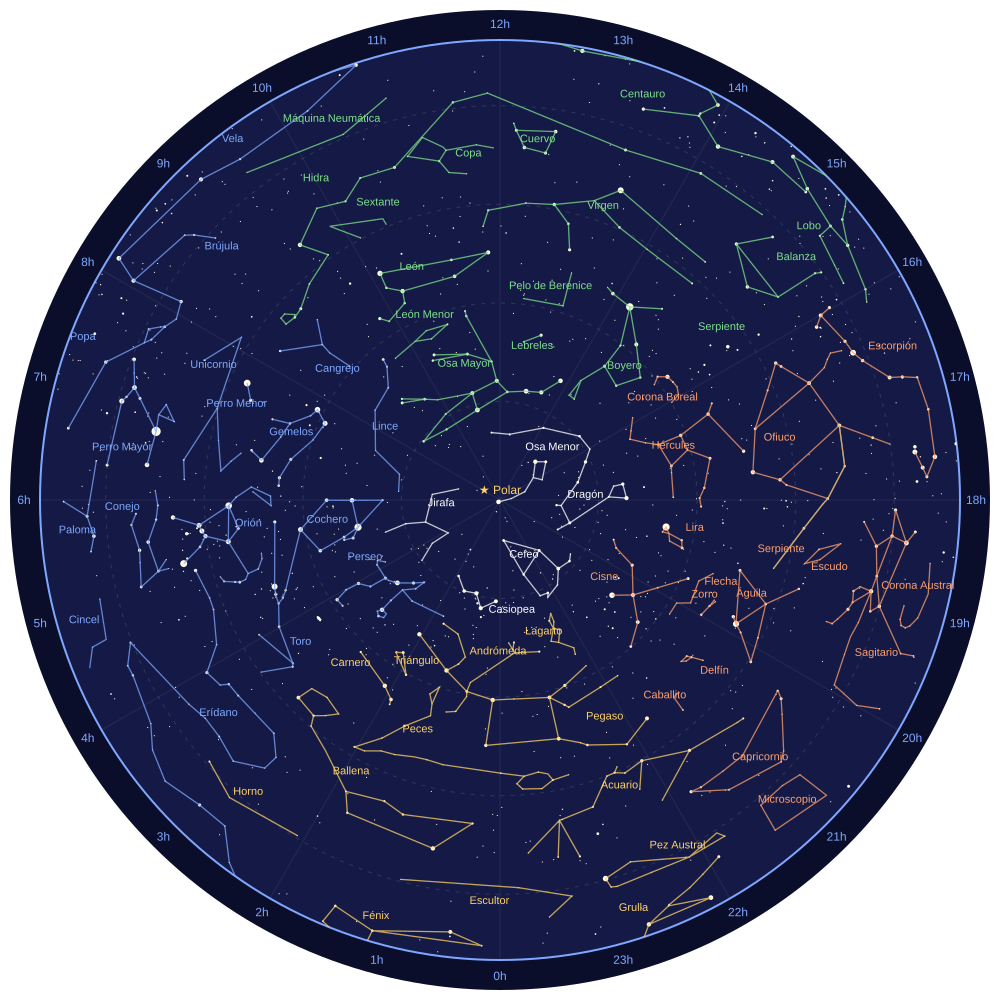

Mapa del cielo desde España
Estas son las constelaciones que se pueden ver desde España a lo largo del año. El centro del mapa es la Estrella Polar; cuanto más lejos del centro, más al sur está la constelación.
El cielo completo

Haz clic en el mapa para abrirlo en grande.
Leyenda: la mejor estación para verlas
- Todo el año (blanco)
- Invierno (azul)
- Primavera (verde)
- Verano (naranja)
- Otoño (amarillo)
Los números de alrededor (0h, 1h, 2h…) son la ascensión recta, la «longitud» del cielo. Las estaciones indican cuándo se ve mejor cada constelación a primera hora de la noche.
Datos de estrellas y líneas: proyecto d3-celestial de Olaf Frohn (licencia BSD).